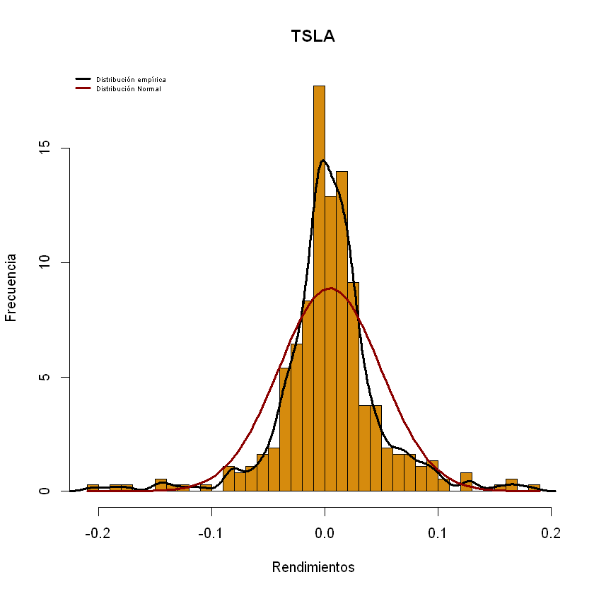
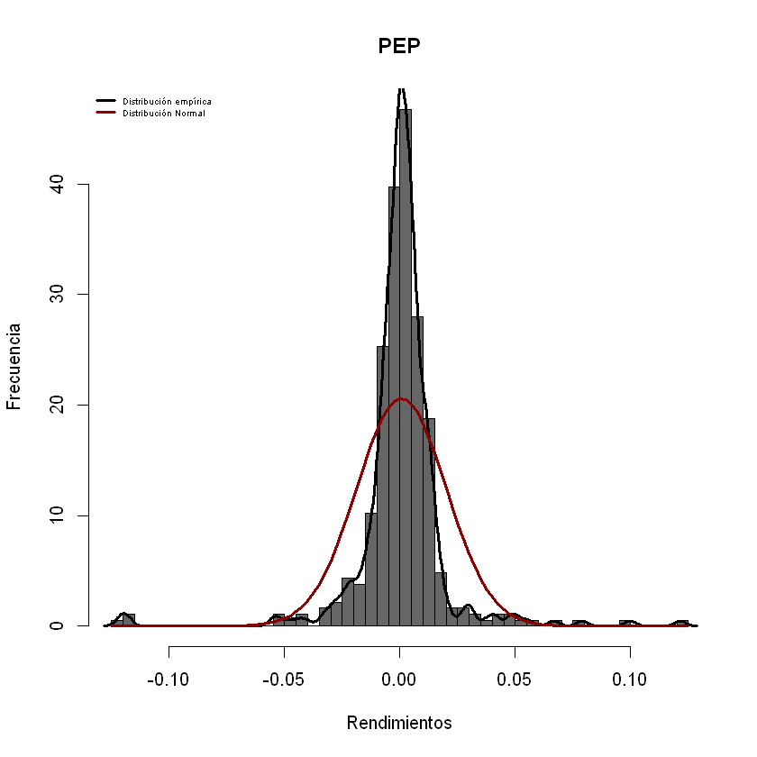
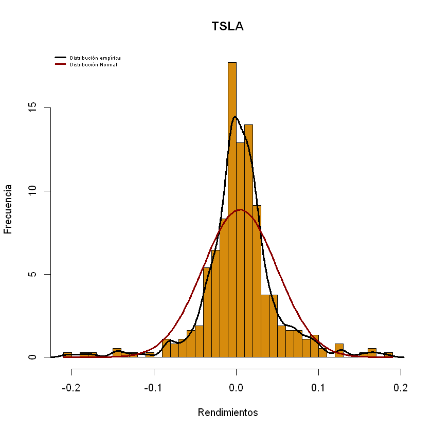
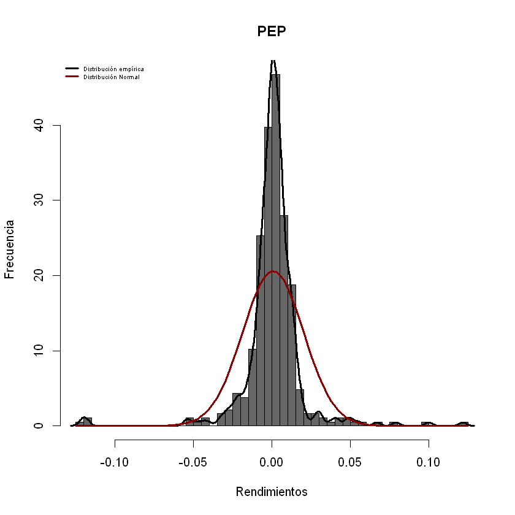

Obtención y Análisis de Rendimientos R¶
Preparación de librerías
Antes de comenzar, se deben tener instaladas las siguientes librerías para que el código funcione correctamente:
Librería
quantmodLibrería
fBasicsLibrería
fPortfolio
install.packages('quantmod')
install.packages('fBasics')
install.packages('fPortfolio')
Installing package into 'C:/Users/Natalia/Documents/R/win-library/3.6'
(as 'lib' is unspecified)
package 'quantmod' successfully unpacked and MD5 sums checked
The downloaded binary packages are in
C:UsersNataliaAppDataLocalTempRtmpecDAiYdownloaded_packages
Installing package into 'C:/Users/Natalia/Documents/R/win-library/3.6'
(as 'lib' is unspecified)
package 'fBasics' successfully unpacked and MD5 sums checked
The downloaded binary packages are in
C:UsersNataliaAppDataLocalTempRtmpecDAiYdownloaded_packages
Installing package into 'C:/Users/Natalia/Documents/R/win-library/3.6'
(as 'lib' is unspecified)
package 'fPortfolio' successfully unpacked and MD5 sums checked
The downloaded binary packages are in
C:UsersNataliaAppDataLocalTempRtmpecDAiYdownloaded_packages
Siempre que se vaya utilizar una librería debe ser llamada por medio del comando library, en este caso para obtener los datos de los precios de acciones de Yahoo Finance, se llamará a la librería Quantmod
library('quantmod')
Loading required package: xts
Warning message:
"package 'xts' was built under R version 4.0.2"
Loading required package: zoo
Warning message:
"package 'zoo' was built under R version 4.0.2"
Attaching package: 'zoo'
The following objects are masked from 'package:base':
as.Date, as.Date.numeric
Loading required package: TTR
Warning message:
"package 'TTR' was built under R version 4.0.2"
Registered S3 method overwritten by 'quantmod':
method from
as.zoo.data.frame zoo
Version 0.4-0 included new data defaults. See ?getSymbols.
Ya con la librería cargada en R, se procede con la obtención de los precios de las acciones con la función getsymbols:
Los símbolos de los nombres de las acciones, deben ser extraídos de la página Yahoo Finance
Se debe ingresar a la función como una lista de elementos entre comillas y separados por comas (,) dentro de un vector, por ello
c('simbolos')Se cambia las fechas según lo deseado, desde el inicio
from=y la fecha en formato “AAAA-MM-DD”. Igualmente, con la fecha finalto=. en este caso particular la función,Sys.Date(), obtiene la fecha de su sistema.
getSymbols.yahoo(c('BABA','AAPL','WMT', 'WBA', 'TSLA','PEP'),env=globalenv(), from = "2019-02-12",to = Sys.Date())
pausing 1 second between requests for more than 5 symbols
pausing 1 second between requests for more than 5 symbols
- 'BABA'
- 'AAPL'
- 'WMT'
- 'WBA'
- 'TSLA'
- 'PEP'
Una vez obtenidos los datos de cada una de las acciones que se escogen,
se procede a crear un objeto de formato DataFrame DF (similar a una
matriz) llamado cartera, que incluya los precios ajustados de cada
acción, con la función merge.
Para que los nombres de la cartera queden con un mejor formato, se
procede a renombrar las columnas del objeto cartera con la función
names() e ingresando el vector con la lista de nombres
c(" nombre", "nombre").
Por último, se extraen las fechas de los precios de las acciones, para crear un objeto con ellas que mas adelante permita graficar.
cartera= merge(BABA$BABA.Adjusted, AAPL$AAPL.Adjusted, WMT$WMT.Adjusted, WBA$WBA.Adjusted,TSLA$TSLA.Adjusted, PEP$PEP.Adjusted)# el simbolo $ extrae una columna de una matriz
names(cartera)<-c("BABA", "AAPL", "WMT", "WBA", "TSLA", "PEP") #vector de nombres digitados
fechas=index(cartera)
Con el fin de crear una paleta, que ayude a realizar gráficos de
distintos colores, se usa la función qualiPalette() perteneciente a la
libreria fBasics. El parámetro n=ncol(cartera) crea tantos colores
como acciones se tengan en el objeto cartera, y el argumento
name = c("Dark2") escoge la paleta de colores a utilizar. Para ver
mas colores disponibles visite la librería colorPalette Ver
aquí
library('fBasics')
colores= qualiPalette(n=ncol(cartera), name = c("Dark2"))
Loading required package: timeDate
Warning message:
"package 'timeDate' was built under R version 4.0.0"
Loading required package: timeSeries
Warning message:
"package 'timeSeries' was built under R version 4.0.2"
Warning message:
"replacing previous import 'graphics::plot' by 'timeDate::plot' when loading 'timeSeries'"
Attaching package: 'timeSeries'
The following object is masked from 'package:zoo':
time<-
Attaching package: 'fBasics'
The following object is masked from 'package:TTR':
volatility
Creación de la matriz de rendimientos y gráfica de Rdtos
Como ya se creó el objeto cartera como DF, se pueden utilizar las
funciones diff() y log(), directamente sobre cartera y de
esta forma, obtener los rendimientos logarítmicos sobre los precios
ajustados.
Cuando se obtienen los rendimientos, siempre hay un dato menos, dentro
de la matriz, por lo que se redefine el objeto Rdtos usando
Rdtos=Rdtos[-1,]
Rdtos=diff(log(cartera))
Rdtos=Rdtos[-1,]
Preparación de la ventana de gráficos. (imagen 1)
Con el fin de crear una ventana, que coloque los rendimientos en una
matríz gráfica de 6x2, se crean el objeto
tamano=c(seq(ncol(cartera))), crea una secuencia de 1 hasta el
número total de acciones con el que cuenta cartera, es decir, si se
cuentan con 10 acciones en cartera, la secuencia será de 1 hasta 10.
de esta forma, la ventana gráfica que se crea con las funciones
matrix (filas, columnas), layout(matrix), y
layout.show()será de 10x2.
Gráficos de rendimientos (imagen 2)
Para el gráfico de los rendimientos se hace uso de un ciclo for,
para que recorra el objeto cartera y grafique las acciones que se
encuentran en cada una de las columnas. Así lo hará dentro de la ventana
gráfica como se muestra en la segunda imagen. la función plot(),
permite realizar las gráficas de tipo X contra Y, que en este caso sería
el objeto fechascreado anteriormente, contra la matríz de
rendimientos en la columna i Rdtos[,i] dentro de los argumentos
principales se encuentran: * main=, que corresponde al título, para
este caso particular tomará los nombres que tiene el objeto cartera
en la posicón i, es decir, el nombre que se le asignó a cada columna
anteriormente. * t= es el tipo de gáfico a usar, en este caso es
"h", pero puede cambiarse, dependiendo del gusto. * col=
pertenece al argumento color del grafico, que se usarán en este caso los
colores definidos anteriormente, por la paleta almacenada en el objeto
colores. * xlab= es el título del eje x. Para conocer mas
argumentos de la función plot() visite la doumentación Ver
aquí
#dev.off()
tamano=c(seq(ncol(cartera)))
matriz=matrix(tamano, ncol=2)
C=layout(matriz)
for(i in 1:ncol(cartera)){
plot(fechas[-1],Rdtos[,i],t="h",main = names(cartera[,i]), col=colores[i],lwd=2, xlab="Fecha")
}

Histograma de los rendimientos
Al igual que con el gráfico anterior, puede crearse la ventana de
preparación de gráficos.
dev.off() win.graph(15,13) tamano=c(seq(ncol(cartera))) matriz=matrix(tamano, ncol=2) C=layout(matriz) layout.show(C)
Igualmente, para la creación de cada uno de los histogramas, dada la
cantidad de acciones , se realizan por medio de un ciclo for, esta
vez se hace uso de la función hist(), para los rendimientos en la
posición i Rdtos[,i] con 40 intervalos o barras breaks=40, los
demás argumentos son iguales a los de la función plot(). *
Adicionalmente, al gráfico de histograma se le ajustan las gráficas de
densidad distribución empírica de los datos (línea negra) con las
funciones lines() density(), el argumento lwd= determina el
grosor de la línea. * También, se le ajusta la curva de distribución
normal teórica (línea roja) haciendo uso de la función
curve=(dnorm(x,...))el resto de argumentos son similares a la
función plot()
for (i in 1:ncol(cartera)){
hist(Rdtos[,i],breaks = 40,col = colores[i],xlab = "Rendimientos",ylab = "Frecuencia",main = names(cartera[,i]),freq =F)
lines(density(Rdtos[,i]),lwd=3)
curve(dnorm(x,mean =mean(Rdtos[,i]),sd=sd(Rdtos[,i])),add=T,col="darkred",lwd=3)
legend(x="topleft",cex = 0.5,c("Distribución empírica","Distribución Normal"),col=c("Black","darkred"),lwd=c(3,3),bty="n")
}
{kind=link}
{kind=link}

 



{kind=link}
{kind=link}
Estadíticas Básicas
Las diversas estadísticas básicas que sirven para el análisis de los
redimientos, pueden ser obtenidas con las funciones: 1.
sumary()estadíticas descriptivas como el mínimo, el primer
cuantil, mediana, media, tercer cuantil y el maximo de cada una de los
rendimientos individuales de las acciones. 2. apply(Rdtos,2,mean)
aplica la función mean()a la matríz de rendimientos por columnas
(2), para encontrar el vector de los rendimientos promedios. 3.
apply(Rdtos,2,mean)aplica la función sd()a la matríz de
rendimientos por columnas (2), para encontrar el vector de las
volatilidades. 4. cor(Rdtos) obtiene la matriz de correlaciones de
los rendimientos
# 1. estadisticas básicas
summary(Rdtos)
#2. media
media_rdto=apply(Rdtos,2,mean)
media_rdto
# 3. volatilidad
volatilidades=apply(Rdtos,2,sd)
volatilidades
#4. matriz de correlaciones
correlacion= cor(Rdtos)
print(correlacion)
Index BABA AAPL
Min. :2019-02-13 Min. :-0.081311 Min. :-0.137708
1st Qu.:2019-06-24 1st Qu.:-0.011338 1st Qu.:-0.006290
Median :2019-10-31 Median : 0.001810 Median : 0.002733
Mean :2019-11-02 Mean : 0.001102 Mean : 0.002310
3rd Qu.:2020-03-12 3rd Qu.: 0.013891 3rd Qu.: 0.012811
Max. :2020-07-22 Max. : 0.085728 Max. : 0.113157
WMT WBA TSLA
Min. :-0.0950917 Min. :-0.137025 Min. :-0.205522
1st Qu.:-0.0049172 1st Qu.:-0.011249 1st Qu.:-0.012547
Median : 0.0006852 Median : 0.001121 Median : 0.003455
Mean : 0.0009428 Mean :-0.001415 Mean : 0.004492
3rd Qu.: 0.0063665 3rd Qu.: 0.010271 3rd Qu.: 0.022869
Max. : 0.1107227 Max. : 0.118704 Max. : 0.181445
PEP
Min. :-0.1213581
1st Qu.:-0.0051923
Median : 0.0007529
Mean : 0.0006118
3rd Qu.: 0.0060943
Max. : 0.1216565
- BABA
- 0.00110208425375515
- AAPL
- 0.00230991189029808
- WMT
- 0.000942815971362458
- WBA
- -0.00141468898900828
- TSLA
- 0.00449189967544632
- PEP
- 0.000611771676540034
- BABA
- 0.0212841779249829
- AAPL
- 0.0227867058816919
- WMT
- 0.0163090807889491
- WBA
- 0.0259798714576607
- TSLA
- 0.0448845730943132
- PEP
- 0.0195726841839839
BABA AAPL WMT WBA TSLA PEP
BABA 1.0000000 0.6488253 0.2960607 0.3524695 0.4124726 0.3680538
AAPL 0.6488253 1.0000000 0.5255732 0.5021039 0.4668292 0.6942764
WMT 0.2960607 0.5255732 1.0000000 0.4570652 0.1471808 0.6833585
WBA 0.3524695 0.5021039 0.4570652 1.0000000 0.2122326 0.4697712
TSLA 0.4124726 0.4668292 0.1471808 0.2122326 1.0000000 0.2793722
PEP 0.3680538 0.6942764 0.6833585 0.4697712 0.2793722 1.0000000
Matríz de varianzas y covarianzas
Para obtener la matriz de varianzas y covarianzas se hace uso de la
función cov(Rdtos).
covarianza= cov(Rdtos)
print(covarianza)
BABA AAPL WMT WBA TSLA
BABA 0.0004530162 0.0003146779 0.0001027702 0.0001949016 0.0003940480
AAPL 0.0003146779 0.0005192340 0.0001953189 0.0002972434 0.0004774596
WMT 0.0001027702 0.0001953189 0.0002659861 0.0001936621 0.0001077402
WBA 0.0001949016 0.0002972434 0.0001936621 0.0006749537 0.0002474834
TSLA 0.0003940480 0.0004774596 0.0001077402 0.0002474834 0.0020146249
PEP 0.0001533270 0.0003096452 0.0002181366 0.0002388767 0.0002454317
PEP
BABA 0.0001533270
AAPL 0.0003096452
WMT 0.0002181366
WBA 0.0002388767
TSLA 0.0002454317
PEP 0.0003830900